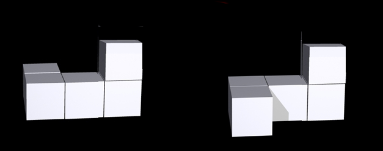

<!DOCTYPE html>
<html>
  <head>
    <title>Mental Rotation Task</title>
    <script src="Experiments/jspsych-6.3.0/jspsych.js"></script>
    <script src="Experiments/jspsych-6.3.0/plugins/jspsych-html-keyboard-response.js"></script>
    <script src="Experiments/jspsych-6.3.0/plugins/jspsych-image-keyboard-response.js"></script>
    <script src="Experiments/jspsych-6.3.0/plugins/jspsych-categorize-image.js"></script>
    <script src="Experiments/jspsych-6.3.0/plugins/jspsych-preload.js"></script>
    <script src="Experiments/jspsych-6.3.0/plugins/jspsych-survey-text.js"></script>
    <link href="Experiments/jspsych-6.3.0/css/jspsych.css" rel="stylesheet" type="text/css">
    <style>
  .bottom {
    bottom: 0;
    text-align: center;
    position: relative;
    }
	.center {
		text-align: center;
		}
	.left {
		text-align: left;
		}
	.right {
		text-align: right;
		}	
	body {
	    background-color:black;
	    font-family: arial;
	    color:white;	
	    font-size: 3.5vh;
	}
	h1 {
	    font-size: 5vh;
	}
	p {
	    font-size: 3.5vh;
	}
	p.bigger {
	    font-size: 4vh;
	}	
	li {
	    font-size: 3.5vh;
	}
	.blue {
		color: blue;
	}	
	.yellow {
		color: yellow;
	}
	.red {
		color: red;
	}
	.green {
		color: lightgreen;
	}

	table, th, td {
	    border: 0.5vh solid white;
	    border-collapse: collapse;	
		border-color: white;
	}
	th, td {
	    padding: 0.5vh;
	}
	th {
	    text-align: left;
	}
	table.tablecenter {
	    margin-left:auto; 
	    margin-right:auto;
	}
	.firstrow {
		background-color: gray;
	}

	</style>

  </head>
  <body></body>
  <script>

    /* create timeline */
    var timeline = [];

    /* preload images + creating data*/
    var welcome = {
      type: "html-keyboard-response",
      stimulus: "Welcome to the experiment. Press any key to begin."
    };
    timeline.push(welcome);

    var test_images = [];
    var s_image = 'g'; //Will be changed later
    var d_image = 'h'; //Will be changed later

    var enter_code = {
      type: 'survey-text',
      questions: [
        {prompt: 'What your condition number? (Please only insert 1 or 2)'}
      ],
    }

    var check_code = {
      timeline: [enter_code],
      loop_function: function(data){
        console.log(data.values()[0].response.Q0)
        if (data.values()[0].response.Q0 == "1"){
          s_image = 'g';
          d_image = 'h';
          return false;
        }
        else if (data.values()[0].response.Q0 == "2"){
          s_image = 'h';
          d_image = 'g';
          return false;
        }
        else{
          return true;
        }
      },
    }
    timeline.push(check_code)

    function translate(response){
      if (response=='same'){
        console.log(s_image);
        return s_image}
      else{console.log("different yeet");
      console.log(d_image);
      return d_image}
    }
    for (var i = 1; i <= 48; i++) {
      test_images.push(
        { stimulus: "mentalrotation/vx_0.jpg".replace("vx", (i)), rotation: 0, correct_response: 'same'},
        { stimulus: "mentalrotation/vx_0_r.jpg".replace("vx", (i)), rotation: 0, correct_response: 'mirrored'},
        { stimulus: "mentalrotation/vx_50.jpg".replace("vx", (i)), rotation: 50, correct_response: 'same'},
        { stimulus: "mentalrotation/vx_50_r.jpg".replace("vx", (i)), rotation: 50, correct_response: 'mirrored'},
        { stimulus: "mentalrotation/vx_100.jpg".replace("vx", (i)), rotation: 100, correct_response: 'same'},
        { stimulus: "mentalrotation/vx_100_r.jpg".replace("vx", (i)), rotation: 100, correct_response: 'mirrored'},
        { stimulus: "mentalrotation/vx_150.jpg".replace("vx", (i)), rotation: 150, correct_response: 'same'},
        { stimulus: "mentalrotation/vx_150_r.jpg".replace("vx", (i)), rotation: 150, correct_response: 'mirrored'}
        )
    }

    var randomized_test_images = jsPsych.randomization.repeat(test_images, 1)

    var loaded_images = []
    var images_set_1 = []
    var images_set_2 = []
    for (var i = 1; i <= 96; i++){
      if (i % 2 == 0) {images_set_1.push(randomized_test_images[i])}
      else {images_set_2.push(randomized_test_images[i])}
      loaded_images.push(randomized_test_images[i].stimulus)
    }

    var practice_set1 = []
    var practice_set2 = []
    for (var i = 97; i <= 102; i++){
      practice_set1.push(randomized_test_images[i]);
      loaded_images.push(randomized_test_images[i].stimulus);
    }
    for (var i = 103; i <= 112; i++){
      practice_set2.push(randomized_test_images[i]);
      loaded_images.push(randomized_test_images[i].stimulus);
    }

    /* Setting up data*/
    var preload = {
      type: 'preload',
      images: loaded_images
    }
    timeline.push(preload);

    /* define instructions trial */
    var instructions = {
      type: "html-keyboard-response",
      stimulus: `
    <div class = "center">
    <h1>Mental Rotation</h1><hr>
    <p>You will be given two cube objects side by side.<br>
    The cubes can be the same or they can be mirror images of each other. </p>
    <br>
    <p><span class="yellow"><i>Are these cube objects the <b>same</b> object or are they <b>mirror</b> images?</i></span></p>
    </div>
    <div class ="left">
    <p>In order to decide whether the cube objects are the same or mirror images, you can mentally rotate one of these
    objects. For example, if you are able to rotate the right object into a position to match the cube object on the left 
    then the objects are the same. If you cannot, then the objects are different.</p>
    <p>Try it out. Press any key to continue to see if you are correct.</p>
    </div>
      `,
    };
    timeline.push(instructions);

    var practice_instructions = {
      type: "html-keyboard-response",
      stimulus: `
      <div class = "center">
        <h1>Mental Rotation</h1><hr>
        <table class="tablecenter" style="width:90%">
            <td><u>original<u>:</td>
            <td style="padding-right:1%"></td>
          </tr>
          <tr>
            <td><u>rotated</u>:</td>
            <td style="padding-right:1%"></td>
          </tr> 
        </table>      

        <p><span class="yellow"><i><u>Answer</u>: The cube objects are <b>mirror</b> images of each other.</i></span></p>
        <p>No amount of rotation can get the objects to be the same.</p>
        <p style="opacity:0.5;">Press Space to continue
                </p>
    </div>`,
    choices: [' ']
    }

    var practice_instructions_keyboard = {
      type: "html-keyboard-response",
      stimulus: `
      <div class = "center">
        <h1>Mental Rotation</h1><hr>
        <br>
        <p>For this experiment you will need to use the 'g' and 'h' keys <br>
        Please place your hands on the keyboard like in the picture above <br>(If not on a computer please change your device).</p>
        <p style="opacity:0.5;">Press Space to continue
                </p>
    </div>`,
    choices: [' ']
    }

    timeline.push(practice_instructions);
    timeline.push(practice_instructions_keyboard);

    var practice_instructions2_G = {
      type: "html-keyboard-response",
      stimulus: `
      <div class = "center">
        <h1>Mental Rotation: Practice Session</h1><hr>
        <p>For practice we will first give you 6 images with 2 cube objects each.</p>
        <table class="tablecenter" style="width:90%">
          <tr class="firstrow">
            <th colspan="2"><b><u>Your Task</u></b></th>
          <tr>
            <td>Objects are the <u>same</u></td>
            <td>Press the 'G' button</td>
          </tr>
          <tr>
            <td>Objects are <u>different</u></td>
            <td>Press the 'H' button</td>
          </tr>
        </table>
      <p><strong><span id="biggerfont">First take your time and make sure you answer correctly.</span></strong><br>
      <p>Once you've made your choice, the computer will give you feedback.</p><br>
      <p>Press Space to start the practice session when you are ready.</p>
    </div>`,
    choices: [' ']
    }
    var practice_instructions2_H = {
      type: "html-keyboard-response",
      stimulus: `
      <div class = "center">
        <h1>Mental Rotation: Practice Session</h1><hr>
        <p>For practice we will first give you 6 images with 2 cube objects each.</p>
        <table class="tablecenter" style="width:90%">
          <tr class="firstrow">
            <th colspan="2"><b><u>Your Task</u></b></th>
          <tr>
            <td>Objects are the <u>same</u></td>
            <td>Press the 'H' button</td>
          </tr>
          <tr>
            <td>Objects are <u>different</u></td>
            <td>Press the 'G' button</td>
          </tr>
        </table>
      <p><strong><span id="biggerfont">First take your time and make sure you answer correctly.</span></strong><br>
      <p>Once you've made your choice, the computer will give you feedback.</p><br>
      <p>Press Space to start the practice session when you are ready.</p>
    </div>`,
    choices: [' ']
    }

    if (s_image == 'g'){
      timeline.push(practice_instructions2_G)
    }
    else{
      timeline.push(practice_instructions2_H)
    }

    /* Practice Trials */
    var pause = {
      type: 'html-keyboard-response',
      stimulus: '<div style="font-size:60px;"></div>',
      choices: jsPsych.NO_KEYS,
      trial_duration: 250
    }

    var practice1 = {
      type: 'categorize-image',
      stimulus: jsPsych.timelineVariable('stimulus'),
      key_answer: function() {return translate(jsPsych.timelineVariable('correct_response'))},
      choices: [s_image, d_image],
      text_answer: function(){
        if (translate(jsPsych.timelineVariable('correct_response'))==s_image) {
          return 'These images are the SAME rotated by ' + jsPsych.timelineVariable('rotation') + ' degrees';
        } else {
          return 'These images are MIRRORED rotated by ' + jsPsych.timelineVariable('rotation') + ' degrees';
        }
      },
      prompt: function(){
        if(s_image == "g") {
          return "<p style='opacity:0.5;'> Same Object: Press G <br><br> Different Object: Press H</p>";
        }
        else{
          return "<p style='opacity:0.5;'> Same Object: Press H <br><br> Different Object: Press G</p>";
        }
      },
      correct_text: "<p style='color:green'>Correct! </p> <p>%ANS%</p>",
      incorrect_text: "<p style='color:red'>Incorrect. </p> <p>%ANS%</p>",
      feedback_duration: 2500,
    }

    var practiceblock1 = {
      timeline: [practice1, pause],
      timeline_variables: practice_set1,
      sample: {
        type: "without-replacement",
      }
    }
    timeline.push(practiceblock1)

    var practice_instructions3 = {
      type: "html-keyboard-response",
      stimulus: `
      <div class = "center">
        <h1>Mental Rotation: Practice Session</h1><hr>
      <p><strong><span id="biggerfont">You are now required to answer as fast as possible.</span></strong><br>
      <i><u>Note</u>:This will be the same amount of time given for the actual experiment.</i></p>
      <p>You will still receive feedback as you go.</p><br>
      <p>Press any button to start the practice session when you are ready.</p>
    </div>`
    }

    timeline.push(practice_instructions3)

    var practice2 = {
      type: 'categorize-image',
      stimulus: jsPsych.timelineVariable('stimulus'),
      key_answer: function() {return translate(jsPsych.timelineVariable('correct_response'))},
      choices: [s_image, d_image],
      text_answer: function(){
        if (translate(jsPsych.timelineVariable('correct_response'))==s_image) {
          return 'These images are the SAME rotated by ' + jsPsych.timelineVariable('rotation') + ' degrees';
        } else {
          return 'These images are MIRRORED rotated by ' + jsPsych.timelineVariable('rotation') + ' degrees';
        }
      },
      prompt: function(){
        if(s_image == "g") {
          return "<p style='opacity:0.5;'> Same Object: Press G <br><br> Different Object: Press H</p>";
        }
        else{
          return "<p style='opacity:0.5;'> Same Object: Press H <br><br> Different Object: Press G</p>";
        }
      },
      correct_text: "<p style='color:green'>Correct! </p> <p>%ANS%</p>",
      incorrect_text: "<p style='color:red'>Incorrect. </p> <p>%ANS%</p>",
      stimulus_duration: 7500,
      feedback_duration: 1500,
      trial_duration: 9000,
    }

    var practiceblock2 = {
      timeline: [practice2, pause],
      timeline_variables: practice_set2,
      sample: {
        type: "without-replacement",
      }
    }
    timeline.push(practiceblock2)

    var practice_instructions4 = {
      type: "html-keyboard-response",
      stimulus: `
      <div class = "center">
        <h1>Mental Rotation: Practice Session</h1><hr>
      <p><strong><span id="biggerfont">We will now not give you any feedback until the end to simulate the actual trial.</span></strong><br>
      <i><u>Note</u>:You have only a limited time to make your choice.</i></p>
      <p>Once you've made your choice, the computer will give you feedback.</p><br>
      <p>Press any button to start the practice session when you are ready.</p>
    </div>`
    }

    timeline.push(practice_instructions4)
    /* test trials */
    var start_instructions = {
      type: 'html-keyboard-response',
      stimulus: `
      <div class = "center">
        <h1>Mental Rotation: Test Session</h1><hr>
        <p>Practice is over and the test session is about to start. There will be no more feedback.</p>
        <p>The test session will take about 6 minutes.</p><br><br>
        <p>Press the spacebar when you are ready.</p>
      </div>`,
      choices: [' '],
    }
    timeline.push(start_instructions)

    var test = {
      type: "image-keyboard-response",
      stimulus: jsPsych.timelineVariable('stimulus'),
      choices: [s_image, d_image],
      data: {
        task: 'response',
        correct_response: jsPsych.timelineVariable('correct_response')
      },
      prompt: function(){
        if(s_image == "g") {
          return "<p style='opacity:0.5;'> Same Object: Press G <br><br> Different Object: Press H</p>";
        }
        else{
          return "<p style='opacity:0.5;'> Same Object: Press H <br><br> Different Object: Press G</p>";
        }
      },
      trial_duration: 7500,
      on_finish: function(data){
        data.correct = jsPsych.pluginAPI.compareKeys(data.response, data.correct_response);
      }
    }

    var trial1 = {
      timeline: [test, pause],
      timeline_variables: images_set_1,
      sample: {
        type: "without-replacement",
      },
      randomize_order: true
    }
    timeline.push(trial1);

    var takebreak = {
      type:"html-keyboard-response",
      stimulus: `
        <div class = "center">
        <p>Take a break, you are halfway there.</p>
        <p>Press Space when you are ready to continue</p>
        </div>
        `,
      choices: [' ']
    }
    timeline.push(takebreak);

    var trial2 = {
      timeline: [test, pause],
      timeline_variables: images_set_2,
      sample: {
        type: "without-replacement",
      },
      randomize_order: true
    }
    timeline.push(trial2);

    /* define debrief */

    var debrief_block = {
      type: "html-keyboard-response",
      stimulus: function() {

        var trials = jsPsych.data.get().filter({task: 'response'});
        var correct_trials = trials.filter({correct: true});
        var accuracy = Math.round(correct_trials.count() / trials.count() * 100);
        var rt = Math.round(correct_trials.select('rt').mean());

        return `<p>Press any key to complete the experiment. Thank you!</p>`;
    
      }
    };
    timeline.push(debrief_block);

    
    /* start the experiment */
    jsPsych.init({
      timeline: timeline,
      on_finish: function() {
        jsPsych.data.displayData();
      }
    });
  </script>
</html>